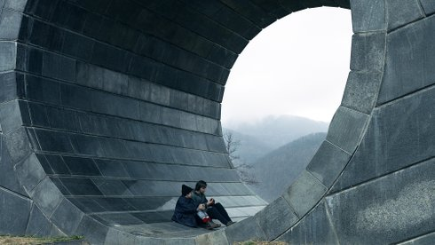

The Load – Teret

Ognjen Glavonić
Freitag 11 okt | 18.30 | Werkstattkino
Vlada ist im Balkankrieg arbeitslos geworden und lässt sich als Lastwagenfahrer für Transporte engagieren. Die Fracht kennt er nicht, das Ziel ist klar. Durch Gebiete, die vom Krieg gezeichnet sind, vorüber an Menschen, die die Hoffnung verloren haben, navigiert er sein versiegeltes Gefährt. Unterwegs nimmt er einen Jungen mit, der sich absetzen will, weil es hier keine Zukunft gibt. Ist die Fracht abgeliefert, zieht es Vlada nach Hause zu Frau und Kind. Das Roadmovie ist die Spielfilm-Version seines Dokumentarfilms DEPTH 2.
Ognjen Glavonić geb. 1985 in Pančevo ist ein serbischer Regisseur, Drehbuchautor und Produzent. Er ist außerdem Gründer des Pančevo Film Festivals. TERET ist sein erster Spielfilm. |
Filme Živan Pujić Jimmy 2009 | Živan makes a Punk Festival 2014 | Depth Two (Dubina Dva) 2016 | The Load – Teret 2018 |